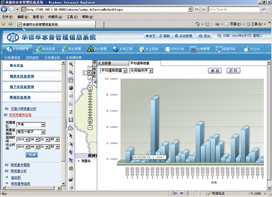
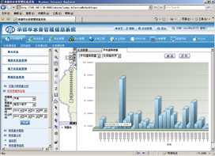

该系统的建立，首先可进行集团公司购电经济性的动态管理与动态评价考核，其次可满足今后强化电网经营管理，实时进行网售 （供）电量的经营结算，初步开展集团公司购、售电经营动态经营尝试，为集团公司随时提供电网不同层面的各类关口管理信息， 并通过不同层面关口信息的加工、整合，为经营管理决策提供科学依据。


光声新时空物联网中间件的推出，破解了物联网应用无法零代码快速搭建的国际性技术难题，实现了物联网GIS应用的快速搭建，利用它可以快速连接各类智能传感器，实现信息的互联互通，对数据进行分析，帮助制定出科学准确的解决方案。目前已经在水利、气象、监控、预警等行业，为水利部、气象局、国家环保部等相关单位，成功搭建了物联网GIS应用。中间件平台未来可以为加速物联网的标准化和产业化建设，使其在更多的领域中得到推广和应用。
山洪灾害防治预警系统采用B/S架构，主要包括山洪灾害普查、水雨情监测、预警发布、应急响应、气象国土信息以及基础信息维护等六大功能模块，系统开发采用光声新时空零代码GIS通用平台的零代码搭建技术，整个过程实现零代码开发，大大缩短开发周期和开发成本。系统接入了雨量站、水文站、水库站、河道水位监测站、气象站以及中国气象网的动态实时数据，确保数据的实时性、准确性，系统对应急情况作出响应，包括发布预警信息、实时反馈、响应反馈等， 实现了山洪灾害防治信息实时监测，为领导的指挥决策提供了技术辅助支撑。
根据国家山洪灾害防治与监测预警的相关技术标准和规范，光声综合运用地理信息、遥感、数字地形和物联网等国际前沿技术，采用基于DEM的分布式水文模型，研制开发了县级小流域洪水分析预报系统。该系统通过GPRS无线通讯手段实时获取雨量监测站、水文站、水库监测站、河道水位监测站、气象站的实时动态监测数据，再根据数字地形数据和历史水文资料，利用分布式水文模型，对流域内的各出口和山丘区任意河道断面的洪水过程进行准确的分析预报，为山洪灾害的预警预报提供技术手段，保护人民生命财产的安全。
洪水分析预报系统采用地理信息技术对洪水过程进行分析预报和直观展现，具体内容包括：断面以上流域面雨量过程、断面预报流量过程线、峰现时间、洪峰流量、水量等内容。预报结果可通过流域名称、行政区划、地图点选、流域分级等方式进行查询，采用过程曲线或表格方式显示。超过预警指标的预报结果在电子地图上直观显示，并在电子地图的预警断面处闪烁，预报分析结果可提供给山洪灾害监测预警平台。
 

水资源实时监控与管理系统是建立在零代码GIS通用中间件平台之上的物联网GIS应用。全球领先的物联网中间件引擎，为水资源实时监控与管理系统快速搭建提供技术支撑，水资源实时监控平台主要实现了地下水、地表水、降雨量、取水大户、取水小户、取水井、排污口以及水功能区等八大类基本信息、实时信息和统计信息的查询、统计、分析与展现；并实时接入了地下水、地表水、取水大户、取水小户以及橡胶坝等六类109个监测站点的实时信息，实现水资源信息的实时动态监测与预警。
由于水利对空间地理信息应用有普遍需求，因此物联网通用中间件平台技术并非只能用于本系统，它可以面向水利行业的其它业务需求，快速搭建水资源信息、水资源实时监控、防汛抗旱、供水管理、污水管理、水利工程、水土保持、农村水利等各种水利行业的GIS应用。
基于零代码GIS通用定制平台，利用先进的地理信息系统、实时数据采集系统、无线通信、数据中心等高新技术结合科学的气象供热计算模型，建立的一套面向哈尔滨全市供热单位的供热气象节能监测调度指挥平台。系统采取WebGIS的形式进行系统基础数据、图形数据的维护和信息发布。各职能部门通过该系统提供的供热管路运行的实时数据（温度、压力、流量），热用户的室内温度，某一时段的历史数据以及天气情况进行科学的分析和运算，为供热单位制定出科学准确的生产指导方案，通过手机短信的形式发布到供热运行人员的手机上，以便提高供热单位的生产效率，达到了节约能源、减少污染物排放、美化城市环境、促进社会和谐发展的目的。


“物联网”被称为继计算机、互联网之后，世界信息产业的第三次浪潮，物联网的兴起与广泛应用必然对建设“人文北京、科技北京、绿色北京”有着无可替代的重要意义。为达到国家及北京市对环境监测工作的要求，需要采用智能化及信息化的手段进行环境监测，做到环境风险用数据分析、管理工作用数据支撑、公共了解用数据服务。
石景山区紧密结合自身特点和优势，通过建立以污染点源监控为核心的环境物联网，逐步实现各类分散源、流动源的实时自动监控，特别是重点做好放射源、危废、噪声等物理指标的全天候、全方位、不间断自动监控，解决石景山区在产业转型过程中仍然存在的工业污染突出、污染源种类众多、流动源不断增加、突发性或非正常排放发生几率高的问题。
电梯作为一种直接关系到人民群众生命安全的特种设备，如何保障电梯的安全运行这一问题越来越突出。在目前传统的电梯管理模式下，电梯漏检、疏于维护、安全部件失灵、个别人员甚至违规进行门锁短接等现象时有发生，而且难以被发现，更无法完全杜绝，这些都是造成电梯事故的重要原因。依托光声零代码GIS通用中间件核心技术平台搭建的电梯智能管理平台的成功上线运行，确保电梯管理部门随时掌握全区电梯的实时运行状态，对全区电梯有无重大危险违规现象进行有效监控；在发生电梯故障时，可大大提高对电梯运行故障的反应速度，确保被困人员能够得到及时的救援，故障能得到迅速的处理与排除。通过对电梯运行记录大数据的分析和统计，可以知道电梯运行中出现故障的类型和发生概率。按照电梯的安装、运行记录数据的分析，可以统计出需要日常维护、中修、大修和报废电梯的信息及实时报警提示，提高维保工作的针对性，有效降低运维成本，加强对电梯安装、维修、改造、维保、检验、使用单位进行全方位的监督管理，以充分保障电梯的安全运行与使用。

该系统的建立，首先可进行集团公司购电经济性的动态管理与动态评价考核，其次可满足今后强化电网经营管理，实时进行网售 （供）电量的经营结算，初步开展集团公司购、售电经营动态经营尝试，为集团公司随时提供电网不同层面的各类关口管理信息， 并通过不同层面关口信息的加工、整合，为经营管理决策提供科学依据。